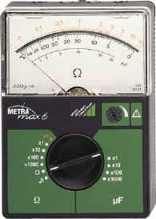
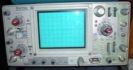
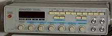
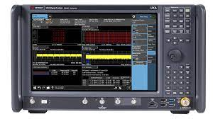

ALAT UKUR TEKNIK KOMPUTER JARINGAN
Alat Ukur Elektronika dan Fungsinya | Alat ukur elektronik (listrik) merupakan perkakas/alat yang digunakan untuk mengukur besaran-besaran listrik seperti hambatan listrik (R), kuat arus listrik (I), beda potensial listrik (V), daya listrik (P), dan lainnya. Terdapat dua jenis alat ukur yaitu alat ukur analog dan alat ukur digital.
1 Ampermeter Amperemeter adalah alat yang digunakan untuk mengukur kuat arus listrik baik untuk listrik DC maupun AC yang ada dalam rangkaian tertutup. Amperemeter biasanya dipasang berderet dengan elemen listrik. Cara menggunakannya adalah dengan menyisipkan amperemeter secara langsung ke rangkaian.

2 Voltmeter Voltmeter adalah alat/perkakas untuk mengukur besar tegangan listrik dalam suatu rangkaian listrik. Voltmeter disusun secara paralel terhadap letak komponen yang diukur dalam rangkaian. Alat ini terdiri dari tiga buah lempengan tembaga yang terpasang pada sebuah bakelite yang dirangkai dalam sebuah tabung kaca atau plastik. Lempengan luar berperan sebagai anode sedangkan yang di tengah sebagai katode. Umumnya tabung tersebut berukuran 15 x 10cm (tinggi x diameter).

3 Ohm-meter Ohm-meter adalah alat untuk mengukur hambatan listrik, yaitu daya untuk menahan mengalirnya arus listrik dalam suatu konduktor. Besarnya satuan hambatan yang diukur oleh alat ini dinyatakan dalam ohm. Alat ohm-meter ini menggunakan galvanometer untuk mengukur besarnya arus listrik yang lewat pada suatu hambatan listrik (R), yang kemudian dikalibrasikan ke satuan ohm.
4 Multitester Analog/Digital Multimeter adalah alat untuk mngukur listrik yang sering dikenal sebagai VOAM (VolT, Ohm, Ampere meter) yang dapat mengukur tegangan (voltmeter), hambatan (ohm-meter), maupun arus (amper-meter). Ada dua kategori multimeter: multimeter digital atau DMM (digital multi-meter)(untuk yang baru dan lebih akurat hasil pengukurannya), dan multimeter analog. Masing-masing kategori dapat mengukur listrik AC, maupun listrik DC.
 \
\
5 Oscilloscope Oscilloscope/osiloskop adalah alat ukur elektronika yang berfungsi memproyeksikan bentuk sinyal listrik agar dapat dilihat dan dipelajari. Osiloskop dilengkapi dengan tabung sinar katode. Peranti pemancar elektron memproyeksikan sorotan elektron ke layar tabung sinar katode. Sorotan elektron membekas pada layar. Suatu rangkaian khusus dalam osiloskop menyebabkan sorotan bergerak berulang-ulang dari kiri ke kanan. Pengulangan ini menyebabkan bentuk sinyal kontinyu sehingga dapat dipelajari.
6 Generator fungsi Generator fungsi adalah alat ukur yang digunakan sebagai sumber pemicu yang diperlukan, merupakan bagian dari peralatan (software) uji coba elektronik yang digunakan untuk menciptakan gelombang listrik. Gelombang ini bisa berulang-ulang atau satu kali.
7 Digital Signal Analyzer Aplikasi Signal Analyzer adalah alat interaktif untuk memvisualisasikan, memproses terlebih dahulu, mengukur, menganalisis, dan membandingkan sinyal dalam domain waktu, domain frekuensi, dan domain frekuensi waktu.
8 Spectrum Analyzer adalah salah satu bagian instrument yang digunakan untuk mengukur sinyal listrik di kawasan frekuensi.